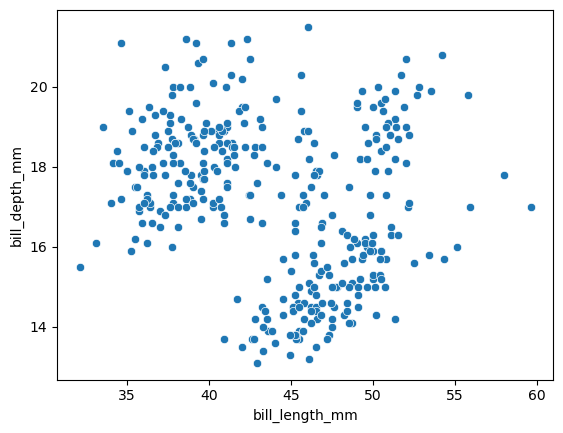
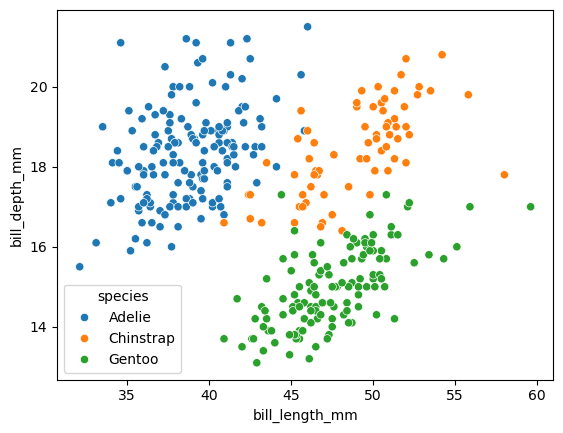
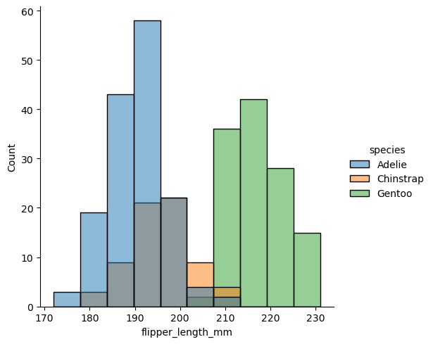
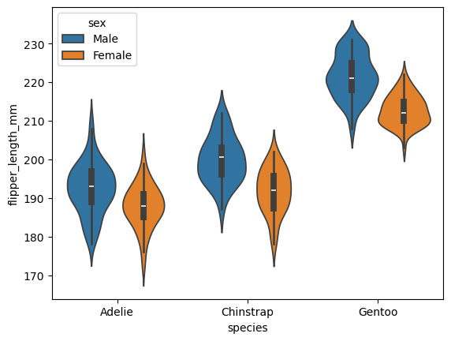

Week 3, Wed, 4/16#
import seaborn as sns
df = sns.load_dataset("penguins")
df
| species | island | bill_length_mm | bill_depth_mm | flipper_length_mm | body_mass_g | sex | |
|---|---|---|---|---|---|---|---|
| 0 | Adelie | Torgersen | 39.1 | 18.7 | 181.0 | 3750.0 | Male |
| 1 | Adelie | Torgersen | 39.5 | 17.4 | 186.0 | 3800.0 | Female |
| 2 | Adelie | Torgersen | 40.3 | 18.0 | 195.0 | 3250.0 | Female |
| 3 | Adelie | Torgersen | NaN | NaN | NaN | NaN | NaN |
| 4 | Adelie | Torgersen | 36.7 | 19.3 | 193.0 | 3450.0 | Female |
| ... | ... | ... | ... | ... | ... | ... | ... |
| 339 | Gentoo | Biscoe | NaN | NaN | NaN | NaN | NaN |
| 340 | Gentoo | Biscoe | 46.8 | 14.3 | 215.0 | 4850.0 | Female |
| 341 | Gentoo | Biscoe | 50.4 | 15.7 | 222.0 | 5750.0 | Male |
| 342 | Gentoo | Biscoe | 45.2 | 14.8 | 212.0 | 5200.0 | Female |
| 343 | Gentoo | Biscoe | 49.9 | 16.1 | 213.0 | 5400.0 | Male |
344 rows × 7 columns
df['body_mass_g2'] = df['body_mass_g'].apply(lambda x: x/1000)
df
| species | island | bill_length_mm | bill_depth_mm | flipper_length_mm | body_mass_g | sex | body_mass_g2 | |
|---|---|---|---|---|---|---|---|---|
| 0 | Adelie | Torgersen | 39.1 | 18.7 | 181.0 | 3750.0 | Male | 3.75 |
| 1 | Adelie | Torgersen | 39.5 | 17.4 | 186.0 | 3800.0 | Female | 3.80 |
| 2 | Adelie | Torgersen | 40.3 | 18.0 | 195.0 | 3250.0 | Female | 3.25 |
| 3 | Adelie | Torgersen | NaN | NaN | NaN | NaN | NaN | NaN |
| 4 | Adelie | Torgersen | 36.7 | 19.3 | 193.0 | 3450.0 | Female | 3.45 |
| ... | ... | ... | ... | ... | ... | ... | ... | ... |
| 339 | Gentoo | Biscoe | NaN | NaN | NaN | NaN | NaN | NaN |
| 340 | Gentoo | Biscoe | 46.8 | 14.3 | 215.0 | 4850.0 | Female | 4.85 |
| 341 | Gentoo | Biscoe | 50.4 | 15.7 | 222.0 | 5750.0 | Male | 5.75 |
| 342 | Gentoo | Biscoe | 45.2 | 14.8 | 212.0 | 5200.0 | Female | 5.20 |
| 343 | Gentoo | Biscoe | 49.9 | 16.1 | 213.0 | 5400.0 | Male | 5.40 |
344 rows × 8 columns
df.rename(columns={'body_mass_g2':'body_mass_kg','sex':'gender'},inplace=True)
df
| species | island | bill_length_mm | bill_depth_mm | flipper_length_mm | body_mass_g | gender | body_mass_kg | |
|---|---|---|---|---|---|---|---|---|
| 0 | Adelie | Torgersen | 39.1 | 18.7 | 181.0 | 3750.0 | Male | 3.75 |
| 1 | Adelie | Torgersen | 39.5 | 17.4 | 186.0 | 3800.0 | Female | 3.80 |
| 2 | Adelie | Torgersen | 40.3 | 18.0 | 195.0 | 3250.0 | Female | 3.25 |
| 3 | Adelie | Torgersen | NaN | NaN | NaN | NaN | NaN | NaN |
| 4 | Adelie | Torgersen | 36.7 | 19.3 | 193.0 | 3450.0 | Female | 3.45 |
| ... | ... | ... | ... | ... | ... | ... | ... | ... |
| 339 | Gentoo | Biscoe | NaN | NaN | NaN | NaN | NaN | NaN |
| 340 | Gentoo | Biscoe | 46.8 | 14.3 | 215.0 | 4850.0 | Female | 4.85 |
| 341 | Gentoo | Biscoe | 50.4 | 15.7 | 222.0 | 5750.0 | Male | 5.75 |
| 342 | Gentoo | Biscoe | 45.2 | 14.8 | 212.0 | 5200.0 | Female | 5.20 |
| 343 | Gentoo | Biscoe | 49.9 | 16.1 | 213.0 | 5400.0 | Male | 5.40 |
344 rows × 8 columns
idx = df['body_mass_g'].idxmax()
idx
237
df.loc[idx, 'bill_length_mm']
49.2
df[(df.island=='Dream') & (df.body_mass_g>4000)].shape
(28, 8)
import seaborn as sns
df = sns.load_dataset("penguins")
df
| species | island | bill_length_mm | bill_depth_mm | flipper_length_mm | body_mass_g | sex | |
|---|---|---|---|---|---|---|---|
| 0 | Adelie | Torgersen | 39.1 | 18.7 | 181.0 | 3750.0 | Male |
| 1 | Adelie | Torgersen | 39.5 | 17.4 | 186.0 | 3800.0 | Female |
| 2 | Adelie | Torgersen | 40.3 | 18.0 | 195.0 | 3250.0 | Female |
| 3 | Adelie | Torgersen | NaN | NaN | NaN | NaN | NaN |
| 4 | Adelie | Torgersen | 36.7 | 19.3 | 193.0 | 3450.0 | Female |
| ... | ... | ... | ... | ... | ... | ... | ... |
| 339 | Gentoo | Biscoe | NaN | NaN | NaN | NaN | NaN |
| 340 | Gentoo | Biscoe | 46.8 | 14.3 | 215.0 | 4850.0 | Female |
| 341 | Gentoo | Biscoe | 50.4 | 15.7 | 222.0 | 5750.0 | Male |
| 342 | Gentoo | Biscoe | 45.2 | 14.8 | 212.0 | 5200.0 | Female |
| 343 | Gentoo | Biscoe | 49.9 | 16.1 | 213.0 | 5400.0 | Male |
344 rows × 7 columns
df_clean = df.dropna()
df_clean
| species | island | bill_length_mm | bill_depth_mm | flipper_length_mm | body_mass_g | sex | |
|---|---|---|---|---|---|---|---|
| 0 | Adelie | Torgersen | 39.1 | 18.7 | 181.0 | 3750.0 | Male |
| 1 | Adelie | Torgersen | 39.5 | 17.4 | 186.0 | 3800.0 | Female |
| 2 | Adelie | Torgersen | 40.3 | 18.0 | 195.0 | 3250.0 | Female |
| 4 | Adelie | Torgersen | 36.7 | 19.3 | 193.0 | 3450.0 | Female |
| 5 | Adelie | Torgersen | 39.3 | 20.6 | 190.0 | 3650.0 | Male |
| ... | ... | ... | ... | ... | ... | ... | ... |
| 338 | Gentoo | Biscoe | 47.2 | 13.7 | 214.0 | 4925.0 | Female |
| 340 | Gentoo | Biscoe | 46.8 | 14.3 | 215.0 | 4850.0 | Female |
| 341 | Gentoo | Biscoe | 50.4 | 15.7 | 222.0 | 5750.0 | Male |
| 342 | Gentoo | Biscoe | 45.2 | 14.8 | 212.0 | 5200.0 | Female |
| 343 | Gentoo | Biscoe | 49.9 | 16.1 | 213.0 | 5400.0 | Male |
333 rows × 7 columns
df[df.isna().any(axis=1)]
| species | island | bill_length_mm | bill_depth_mm | flipper_length_mm | body_mass_g | sex | |
|---|---|---|---|---|---|---|---|
| 3 | Adelie | Torgersen | NaN | NaN | NaN | NaN | NaN |
| 8 | Adelie | Torgersen | 34.1 | 18.1 | 193.0 | 3475.0 | NaN |
| 9 | Adelie | Torgersen | 42.0 | 20.2 | 190.0 | 4250.0 | NaN |
| 10 | Adelie | Torgersen | 37.8 | 17.1 | 186.0 | 3300.0 | NaN |
| 11 | Adelie | Torgersen | 37.8 | 17.3 | 180.0 | 3700.0 | NaN |
| 47 | Adelie | Dream | 37.5 | 18.9 | 179.0 | 2975.0 | NaN |
| 246 | Gentoo | Biscoe | 44.5 | 14.3 | 216.0 | 4100.0 | NaN |
| 286 | Gentoo | Biscoe | 46.2 | 14.4 | 214.0 | 4650.0 | NaN |
| 324 | Gentoo | Biscoe | 47.3 | 13.8 | 216.0 | 4725.0 | NaN |
| 336 | Gentoo | Biscoe | 44.5 | 15.7 | 217.0 | 4875.0 | NaN |
| 339 | Gentoo | Biscoe | NaN | NaN | NaN | NaN | NaN |
df.groupby('species')[['bill_length_mm','bill_depth_mm']].mean()
| bill_length_mm | bill_depth_mm | |
|---|---|---|
| species | ||
| Adelie | 38.791391 | 18.346358 |
| Chinstrap | 48.833824 | 18.420588 |
| Gentoo | 47.504878 | 14.982114 |
df.bill_length_mm.corr(df.bill_depth_mm)
-0.23505287035553263
sns.scatterplot(
data = df,
x = "bill_length_mm",
y = "bill_depth_mm",
)
<Axes: xlabel='bill_length_mm', ylabel='bill_depth_mm'>

species = df.species.unique()
species
array(['Adelie', 'Chinstrap', 'Gentoo'], dtype=object)
for s in species:
df_s =df[df.species==s]
corr = df_s.bill_length_mm.corr(df_s.bill_depth_mm)
print(f"{s}:{corr:.2f}")
Adelie:0.39
Chinstrap:0.65
Gentoo:0.64
sns.scatterplot(
data = df,
x = "bill_length_mm",
y = "bill_depth_mm",
hue = 'species'
)
<Axes: xlabel='bill_length_mm', ylabel='bill_depth_mm'>

import altair as alt
alt.Chart(df).mark_circle().encode(
x = alt.X("bill_length_mm",scale=alt.Scale(domain=(30, 60))),
y = alt.X("bill_depth_mm",scale=alt.Scale(domain=(12, 22))),
color = "species",
tooltip = ["species", "bill_length_mm", "bill_depth_mm", "island", "sex"]
)
brush = alt.selection_interval()
c1 = alt.Chart(df).mark_point().encode(
x = alt.X("bill_length_mm",scale=alt.Scale(domain=(30, 60))),
y = alt.X("bill_depth_mm",scale=alt.Scale(domain=(12, 22))),
color = "species:N",
tooltip = ["species", "bill_length_mm", "bill_depth_mm", "island", "sex"]
).add_params(brush)
c2 = alt.Chart(df).mark_bar().encode(
x="species:N",
y="count()"
).transform_filter(brush)
c1|c2
sns.displot(df, x="flipper_length_mm", hue="species")
<seaborn.axisgrid.FacetGrid at 0x3214c1250>

sns.violinplot(data=df, x="species", y="flipper_length_mm",hue="sex")
<Axes: xlabel='species', ylabel='flipper_length_mm'>

sns.pairplot(df, diag_kind="hist", hue = 'species')
<seaborn.axisgrid.PairGrid at 0x323548f50>